Poster for the 2025 Shanghai International Film Festival and ELLEMEN Film Hero Night
The 27th Shanghai International Film Festival arrived as scheduled. At the opening dinner and ELLEMEN Film Hero Night, the eye-catchers were not only the stars on the red carpet. Behind the scenes was an innovative live-streaming solution, the "Jia Live PRO" cinema-camera channelized live solution. Canon (note 1) used the EOS C400 and EOS C80 professional digital cinema cameras, along with cinema servo lenses, as its core. It brought a fresh visual experience to the live stream of this cultural event.
This live stream had many technical highlights, and the "Jia Live PRO" cinema-camera channelized live solution raised the standard again. The system joins cinema-grade image quality with a channelized live workflow. It delivers high resolution and rich dynamic range while recording subtle, emotional images, and it keeps the multi-camera teamwork stable and efficient. On Canon color science, each model accurately reproduced the light and detail of the scene. The native system combines precise autofocus with high-quality recording. It meets the need of real-time streaming and leaves room for post-production, to deliver a "shoot once, use many ways" broadcast plan.
"Jia Live PRO" provided the live solution for the ELLEMEN Film Hero Night
Canon cinema-camera image quality: a meeting of technology and art
"Camera four ready, guests entering." The director's call was clear. In the live shooting area, every camera was already on standby. The live stream used eight cameras in total. Four were EOS C400 channelized cinema cameras paired with servo cinema lenses: two at the signature board area, one in the silhouette area, and one on the red carpet walk, to shoot the core program. Four were flexible roaming cameras, using the EOS C80, to film interviews or to move freely.
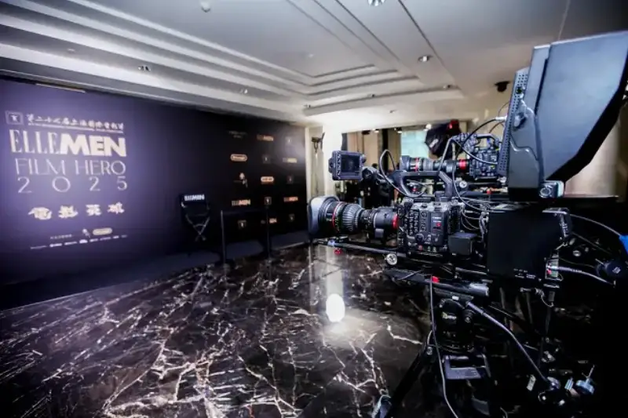
Dual cameras at the signature board area: Canon EOS C400 with cinema servo lens CN10x25 IAS S
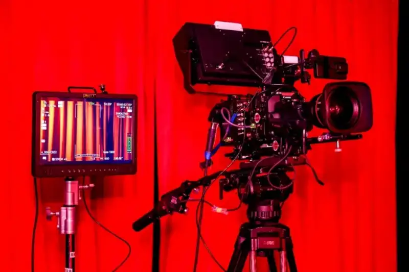
Used in the silhouette area: Canon EOS C400 with cinema servo lens CN7x17 KAS T
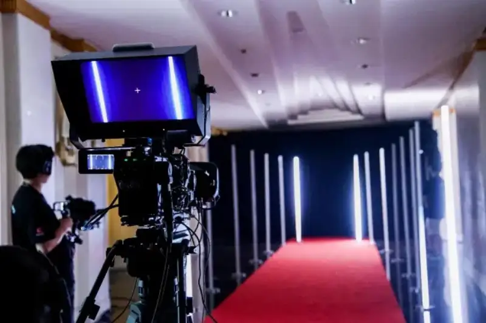
Used on the red carpet walk: Canon EOS C400 with cinema servo lens CN7x17 KAS T
The channelized cinema cameras used the "Jia Live PRO" system for channelized control. This joins the detailed image and high dynamic range of the EOS C400 with the easy control of traditional broadcast gear, and it delivers a strong visual and operating experience in large live events. The EOS C400 used for the channel cameras has a 6K full-frame CMOS sensor, which is a big advantage in shooting. It can create shallow depth of field, and the oversampled image is extremely detailed. The EOS C400 also has three base ISOs, so it handles the changing light on site well. Paired with high-zoom Canon cinema servo lenses such as the CN7x17 KAS T and CN10x25 IAS S, the EOS C400 gives precise, easy control that fits the habits of traditional channelized live work.
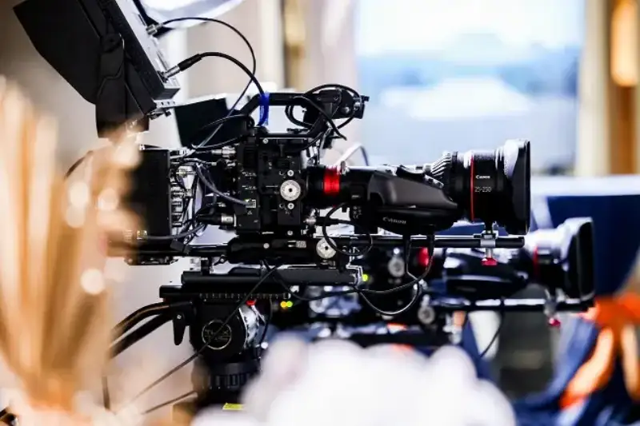
EOS C400 with the CN10x25 IAS S cinema servo lens
EOS C400 with the CN7x17 KAS T cinema servo lens
The magic of color science: consistent performance under complex light
The light at the dinner was a true "hard mode" challenge. The red carpet area, the signature board area, and the main stage each had different light. There were LED spotlights, PAR lights, and stage effect lights, layered into a complex mix. The color temperature varied a lot, and the brightness and saturation of color were high. Thanks to Canon color science and the color consistency of the Canon cinema line, the output shows smooth joins between cameras, true color reproduction, and no visible difference between matched frames.
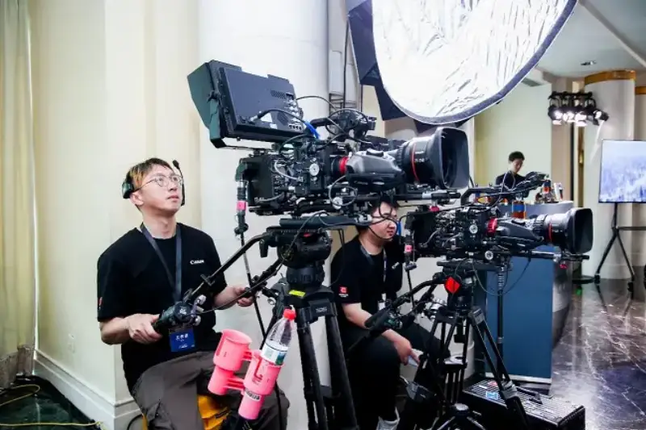
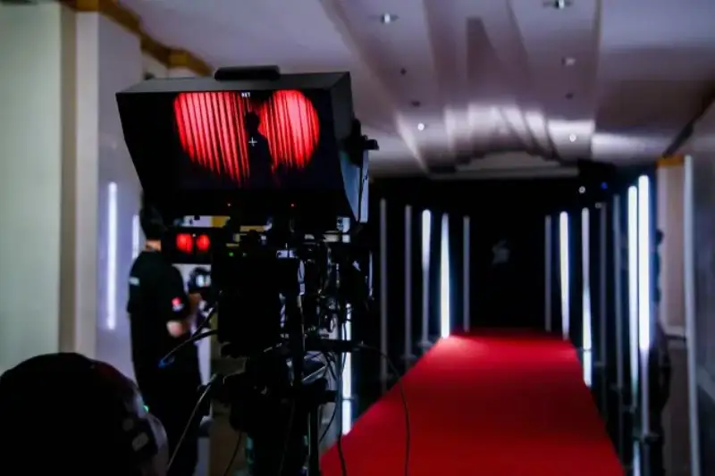
The complex lighting at the live event
Also, accurate reproduction of skin tone and skin texture is a core point for this kind of live stream. Under complex stage light, the stars' skin tones and textures come through truthfully. This raises the quality of the stream in the details, and it shows the professionalism of the broadcast.
The advantage of the Canon native ecosystem: the story behind mixing cameras and tech, and the search to break through industry pain points
The native pairing of the EOS C400's second-generation Dual Pixel CMOS AF with Canon servo cinema lenses extends the autofocus area to nearly 100% of the frame. It raises the accuracy of people detection, and it can identify a person's eyes, face, head, and body.
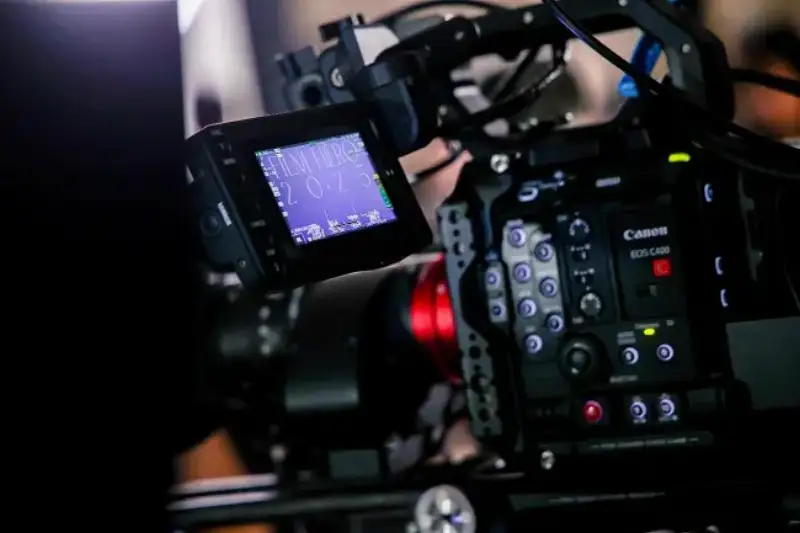
Autofocus tracks the focus precisely
This technology brings a new experience to live shooting. For the fast-paced red carpet, with shallow depth of field and constant change, Canon autofocus precisely solves the pain point of focus tracking. The camera operator only has to compose and move the camera to shoot with ease. Even when a star turns or acts on impulse, the autofocus system still holds the focus precisely. This is essential for an efficient live stream.
Mixing camera models was another highlight of this stream. Besides the channel cameras, four light EOS C80s formed a flexible "light cavalry" unit. Though small, these devices carry the strong genes of Canon cinema cameras. The light EOS C80 and the higher-spec EOS C400 together form a fully featured live-shooting plan.
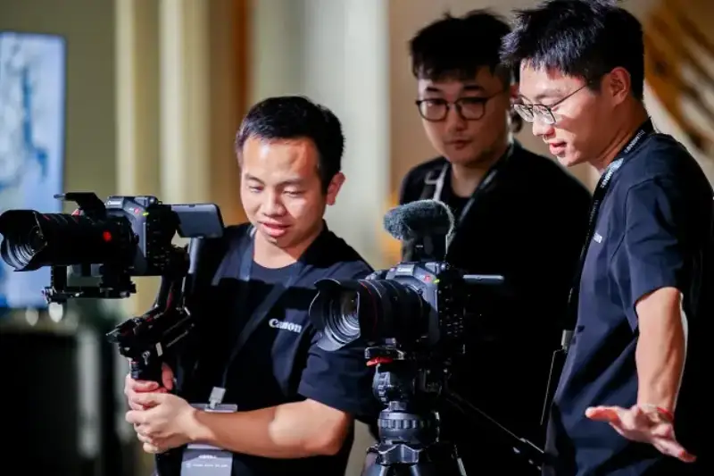
The lightweight EOS C80
"These two camera models together into the console let me achieve the effect I want with ease. The mix of professional image quality and agility is very satisfying," said Zhi Jun, the chief technical director of the live stream.
The EOS C400 has SYNC and RET ports. It supports return input and TALLY input without extra expansion units. The roaming cameras also have TALLY. This setup lets the multiple cameras work together.
Seamless broadcast integration and high stability: a fit for broadcast workflows
The "Jia Live PRO" cinema-camera channelized live solution relies on a multi-camera remote control system. Through the Canon RC-IP1000 integrated camera controller, the team can control exposure, color matching, and focus for every camera remotely. This handles the light changes that can happen at any moment on site. It stays "highly similar" to traditional broadcast habits, so it raises the professionalism and stability of the overall image during the stream.
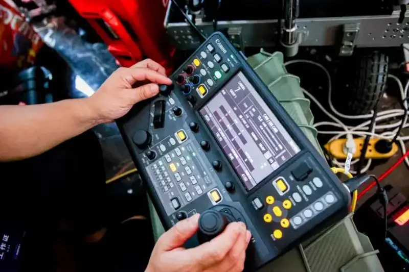
The director uses the Canon RC-IP1000 to adjust camera parameters in real time
Across only one day of rehearsal and the live broadcast, the "Jia Live PRO" system earned strong recognition from the technical team for its reliability and fast deployment.
The system uses a modular architecture, which greatly speeds up technical deployment for large events. Faced with complex multi-scene switching and high-intensity continuous work, the system stayed stable throughout, with zero signal interruption and zero equipment failure. Its sync accuracy and signal stability met broadcast-grade standards. Its power solution was not only highly reliable but also streamlined the complex cabling workflow. This gave the team a solid base behind the tight live schedule.
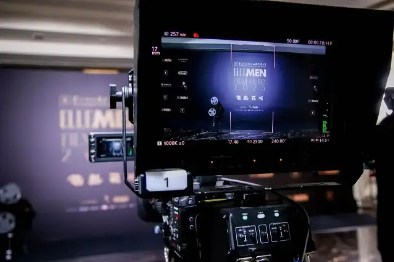
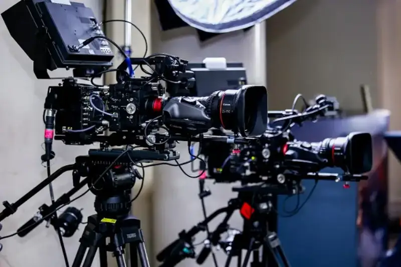
A stable system is the solid foundation of a live stream
The successful live stream was another step in channelizing cinema cameras. Several producers in the field said this Canon solution solves the long-standing industry problem of "not being able to have both cinema quality and broadcast workflow." It is leading technology in live streaming in recent years, and it brings cinema-grade image expression truly into real-time broadcast.
Through this ELLEMEN Film Hero Night live practice, Canon showed the industry a future full of possibility. Cinematic artistic expression and the live feel of streaming no longer belong to two separate technical systems. This meeting of technology and art may well be the start of the next golden age for the image industry.